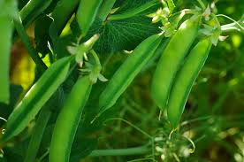

FIELD PEA
Introduction

Pea (Pisum in Latin) is a pulse, vegetable or fodder crop, but the word often refers to the seed or sometimes the pod of this flowering plant species, formerly 'Pisum sativum' (meaning cultivated pea), it has been proposed to rename the species as Lathyrus oleraceus.[2] Each pod contains several seeds (peas), which can have green or yellow cotyledons when mature. Botanically, pea pods are fruit,[3] since they contain seeds and develop from the ovary of a (pea) flower. The name is also used to describe other edible seeds from the Fabaceae such as the pigeon pea (Cajanus cajan), the cowpea (Vigna unguiculata), the seeds from several species of Lathyrus and is used as a compound form for example Sturt's desert pea.
Peas are annual plants, with a life cycle of one year. They are a cool-season crop grown in many parts of the world; planting can take place from winter to early summer depending on location. The average pea weighs between 0.1 and 0.36 gram.[4] The immature peas (and in snow peas the tender pod as well) are used as a vegetable, fresh, frozen or canned; varieties of the species typically called field peas are grown to produce dry peas like the split pea shelled from a matured pod. These are the basis of pease porridge and pea soup, staples of medieval cuisine; in Europe, consuming fresh immature green peas was an innovation of early modern cuisine.
Nutrition
Raw green peas are 79% water, 14% carbohydrates, 5% protein, and contain negligible fat (table). In a reference amount of 100 grams (3.5 oz), raw green peas supply 81 calories of food energy, and are a rich source (20% or more of the Daily Value, DV) of vitamin C (48% DV), vitamin K, thiamine, and manganese, with several B vitamins and dietary minerals in moderate amounts (11-16% DV) (table).
Soil ans Nutrition
Field peas, like other crops, thrive in well-prepared soil with appropriate nutrient levels. Here are the soil and nutrient requirements for growing field peas:
- Soil Type: Field peas prefer well-drained soils with good water-holding capacity. Sandy loam and loam soils are generally ideal, although they can grow in other soil types with proper management.
- Soil pH: The optimal soil pH for growing field peas is between 6.0 and 7.0. Soil pH outside of this range can affect nutrient availability and plant growth. Conducting a soil test before planting can help determine if any pH adjustments are needed.
- Nutrient Requirements: Field peas have specific nutrient needs for optimal growth and productivity. The primary nutrients required are nitrogen (N), phosphorus (P), and potassium (K), often referred to as NPK.
- Nitrogen (N): Field peas are unique among legumes because they can fix atmospheric nitrogen with the help of nitrogen-fixing bacteria in their root nodules. This reduces the need for supplemental nitrogen fertilization, especially if the soil has a healthy population of nitrogen-fixing bacteria. However, some nitrogen may still be needed, especially in low-nitrogen soils or when growing non-inoculated varieties
- Phosphorus (P) and Potassium (K): Adequate levels of phosphorus and potassium are essential for root development, flowering, and pod formation in field peas. A soil test can determine the available phosphorus and potassium levels, and fertilizers can be applied accordingly. A balanced fertilizer with an NPK ratio suitable for legumes (e.g., 5-10-10) can be used at planting time or as needed based on soil test recommendations.
- Micronutrients: Field peas may also benefit from micronutrients such as calcium, magnesium, sulfur, and trace elements like iron, zinc, and manganese. Micronutrient deficiencies can be addressed through soil amendments or foliar applications if identified through soil testing or plant symptoms.
- Organic Matter: Incorporating organic matter into the soil, such as compost, well-rotted manure, or cover crop residues, can improve soil structure, water retention, and nutrient availability for field peas.
- Fertilizer Application: It's important to apply fertilizers according to soil test recommendations to avoid over-fertilization, which can lead to nutrient imbalances or environmental issues. Split applications of fertilizers may be beneficial, with some applied at planting and additional amounts based on crop growth and nutrient uptake.
- pH Adjustments: If soil pH is outside the optimal range, lime or sulfur can be used to adjust pH levels. It's important to follow soil test recommendations for pH adjustments to ensure nutrient availability and plant health.
By meeting these soil and nutrient requirements, you can promote healthy growth and maximize yield potential when growing field peas. Regular monitoring of soil fertility and plant health throughout the growing season can help adjust nutrient management practices as needed.
How To Plant Field peas

Planting field peas involves several steps to ensure successful growth and a good harvest. Here's a guide on how to plant field peas:
- Timing: Field peas are cool-season crops and should be planted in early spring as soon as the soil can be worked and temperatures are consistently above freezing. They can also be planted in late summer for a fall crop.
- Site Selection: Choose a sunny location with well-drained soil. Field peas prefer slightly acidic to neutral soil pH (around 6.0 to 7.0). Avoid planting in low-lying areas that are prone to waterlogging.
- Soil Preparation:
- Remove weeds, rocks, and debris from the planting area.
- Work the soil to a depth of about 4-6 inches using a garden fork or tiller.
- Incorporate organic matter such as compost, aged manure, or cover crop residues to improve soil fertility, structure, and moisture retention.
- Seed Selection: Choose high-quality field pea seeds from a reputable supplier. Consider factors such as seed variety (determinate or indeterminate), disease resistance, and intended use (for food or as a cover crop).
- Planting Depth and Spacing:
- Plant field pea seeds about 1 to 2 inches deep in rows or hills.
- Space seeds approximately 2 to 4 inches apart within rows or clusters.
- Rows should be spaced about 18 to 24 inches apart to allow for plant growth and cultivation.
- Inoculation (Optional): Field peas, like other legumes, can benefit from inoculation with nitrogen-fixing bacteria (Rhizobia) to improve nitrogen fixation. This is especially important if the soil has not previously grown legumes or if using non-inoculated seeds.
- Watering: After planting, water the soil thoroughly to ensure good seed-to-soil contact and initiate germination. Keep the soil evenly moist but not waterlogged throughout the growing season, especially during dry periods.
- Support (if needed): Some varieties of field peas, particularly indeterminate types, may benefit from support such as trellises, stakes, or pea fences as they grow. Install support structures early to avoid damaging the plants later.
- Mulching: Apply a layer of organic mulch, such as straw or shredded leaves, around the base of the plants to conserve soil moisture, suppress weeds, and regulate soil temperature.
- Fertilization: While field peas can fix nitrogen from the air, they may still benefit from phosphorus and potassium fertilization based on soil test recommendations. Apply fertilizers according to package instructions or consult with a local agricultural extension office for guidance.
- Weed Control: Keep the planting area free of weeds by hand-pulling or using mulch to smother weed growth. Avoid using herbicides that may harm field pea plants.
- Pest and Disease Management: Monitor plants regularly for pests such as aphids, pea weevils, and diseases like powdery mildew. Use integrated pest management practices and choose disease-resistant varieties when possible.
13. Harvesting: Field peas are typically ready for harvest 60 to 90 days after planting, depending on the variety and growing conditions. Harvest when the pods have matured and turned brown or yellow, and the peas inside are firm and fully developed.
Following these planting guidelines can help you grow healthy and productive field pea plants. Adjustments may be needed based on your specific climate, soil conditions, and local agricultural recommendations.
Fertilizing
Fertilizing field peas is important to ensure they have the nutrients they need for healthy growth and optimal yield. Here are some guidelines for fertilizing field peas:
- Soil Testing: Before planting field peas, conduct a soil test to determine the nutrient levels in your soil. This will help you make informed decisions about fertilization and avoid over- or under-fertilization.
- Nitrogen Requirements: Field peas have the unique ability to fix atmospheric nitrogen with the help of nitrogen-fixing bacteria (Rhizobia) in their root nodules. This reduces their dependency on external nitrogen fertilization. However, the initial growth stages may benefit from a small amount of nitrogen to support early growth until nitrogen fixation is fully established.
- Phosphorus and Potassium: Field peas require phosphorus (P) and potassium (K) for root development, flowering, and pod formation. Apply phosphorus and potassium fertilizers based on soil test recommendations or use a balanced fertilizer with an NPK ratio suitable for legumes (e.g., 5-10-10) at planting time.
- Inoculation: If you're planting field peas in a soil that hasn't previously grown legumes or if using non-inoculated seeds, consider inoculating the seeds with nitrogen-fixing bacteria (Rhizobia). This can enhance nitrogen fixation and reduce the need for supplemental nitrogen fertilization.
- Application Timing: Apply fertilizers according to the specific nutrient needs of field peas at different growth stages. For example:
- Apply phosphorus and potassium fertilizers at planting time to support early root development.
- Consider side-dressing nitrogen fertilizers during the vegetative growth stage if additional nitrogen is needed based on plant growth and soil conditions.
- Fertilizer Placement: When applying fertilizers, ensure they are placed at the appropriate depth and distance from the seeds or plants to avoid fertilizer burn or damage to the roots. Follow manufacturer recommendations for fertilizer application rates and placement methods.
- Organic Matter: Incorporating organic matter into the soil, such as compost or well-aged manure, can supplement nutrient levels and improve soil fertility over time. Organic amendments can be applied before planting or as a top dressing during the growing season.
- Monitor and Adjust: Monitor the growth and health of your field pea plants throughout the growing season. Adjust fertilization practices based on plant response, soil nutrient levels, and any deficiencies or excesses observed.
By following these fertilization guidelines and adapting them to your specific soil and crop needs, you can promote healthy growth and maximize the yield of your field pea plants. Regular soil testing and agronomic advice from local agricultural experts can further optimize your fertilization practices.